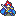

Fire Emblem: The Blazing Blade
Es un juego para la consola de videojuegos Game Boy Advanced de la franquicia de videojuegos Fire Emblem del género rol táctico (estrategia y rol) desarrollada por Intelligent Systems, diseñada por Shouzou Kaga y distribuida por Nintendo. Fire Emblem se caracteriza por la mezcla de los géneros de estrategia y rol, por ser pioneros en este tipo de juegos y por tener una gran influencia del folclore medieval europeo.
Historia
Todo se desarrolla en el continente de Elibe , tierra de humanos y dragones . Donde una vez los humanos destruyeron ese equilibrio tras una guerra despiadada recordada como... "La Batida". Todo gracias a "Las Ocho Leyendas" con lo que, derrotados y humillados, los Dragones fueron expulsados del reino. Y así forjando 5 Naciones. Cada uno se retiró a tierras diferentes. Las más importantes, Biran y Etruria . De la mano de "El Héroe Harmut", Biran; un país conocido por su poder militar, y de "La Santa Elimine", Etruria, un país muy civilizado y culto. Entre otros como Sacae , de la mano de "La Jinete Divina Hanon"; quién se retiró junto a los nómadas en las planicies. Y ahora, mil años después... una nueva amenaza acecha desde las sombras.
Jugabilidad 
La jugabilidad del juego se basa en combates por turnos, donde a grandes rasgos el jugador debe utilizar a los personajes en su poder para derrotar a las unidades enemigas, para lograr esto el jugador deberá mover sus unidades a través de un mapa cuadriculado, cada unidad puede moverse una vez por turno y del jugador dependerá decidir si acercar a una de sus unidades a una unidad enemiga para atacarla, moverla hacia un lugar de interés como pueden ser pueblos o cofres del tesoro e incluso hacerla retroceder para resguardar y curar a unidades con poca salud, además el jugador también puede elegir con que arma atacar y desde donde, ya que algunas armas tiene ventajas sobre otras y no todos los terrenos son iguales. Una vez terminado el turno del jugador empieza el turno enemigo donde las unidades enemigas hacen lo mismo.
Datos Curiosos
Es el segundo Fire Emblem para la GBA y el primero en español! A pesar de ser la séptima de la franquicia Aunque como siempre sólo en Europa... y con ello Nintendo aprendiendo a que la serie tiene valor fuera de Japón. Fue además el primero en salir de Japón, con algunos meses de diferencia en América. Pero a decir verdad no tuvo muchas novedades respecto al Binding Blade, quizás Intelligent Systems tuvo poco tiempo para agregar más cosas o quiso mantener el juego simple. De todas formas Fire Emblem se hizo ms conocido gracias a este juego y que fue muy valorado a fuera de Japón, saliendo de allí los siguientes.